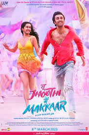

John Wick : Chapter 4
With the price on his head ever increasing,legendary hit man John Wick takes his fight against the High Table global as he seeks out the most powerful players in the underworld, from New York to Paris to Japan to Berlin.John Wick: Chapter 4 is a 2023 American neo-noir action thriller film directed by Chad Stahelski and written by Shay Hatten and Michael Finch. The sequel to John Wick: Chapter 3 Parabellum (2019) and the fourth installment in the John Wick franchise, the film stars Keanu Reeves as the title character, alongside Donnie Yen, Bill Skarsgård, Laurence Fishburne, Hiroyuki Sanada, Shamier Anderson, Lance Reddick, Rina Sawayama, Scott Adkins, Clancy Brown, and Ian McShane. In the film, John Wick sets out to get revenge on the High Table and those who left him for dead.

Avatar The Way of Water
Jake Sully and Ney'tiri have formed a family and are doing everything to stay together.However, they must leave their home and explore the regions of Pandora. When an ancient threat resurfaces, Jake must fight a difficult war against the humans.Avatar: The Way of Water is a 2022 American epic science fiction film directed and produced by James Cameron. He co-wrote the screenplay with Rick Jaffa and Amanda Silver from a story the trio wrote with Josh Friedman and Shane Salerno. Distributed by 20th Century Studios, it is the sequel to Avatar (2009) and the second installment in the Avatar film series. Cast members Sam Worthington, Zoe Saldaña, Stephen Lang, Joel David Moore, CCH Pounder, Giovanni Ribisi, Dileep Rao, and Matt Gerald reprise their roles from the original film, with Sigourney Weaver returning in an additional role while Kate Winslet joined the cast. It follows a blue-skinned humanoid Na'vi named Jake Sully (Worthington) as he and his family, under renewed human threat, seek refuge with the aquatic Metkayina clan of Pandora, a habitable exomoon on which they live.
bholaa
After 10 years of imprisonment, Bholaa is finally going home to meet his young daughter. However, his journey is not so simple as he soon faces a pathway full of crazy obstacles, with death lurking around every corner.Bholaa is a 2023 Indian Hindi-language action-adventure film directed by Ajay Devgn and jointly produced by Ajay Devgn FFilms, Reliance Entertainment, T-Series Films and Dream Warrior Pictures. It is a remake of the 2019 Tamil film Kaithi and stars Devgn in the titular role alongside Tabu, Deepak Dobriyal, Sanjay Mishra, Gajraj Rao and Vineet Kumar while Amala Paul, Abhishek Bachchan and Raai Laxmi make special appearances. The film follows an ex-convict who battles criminals while transporting a truck full of poisoned cops to the hospital in exchange for meeting his daughter after ten years of imprisonment.

Tu Jhooti Main Makkaar
Tu Jhoothi Main Makkaar (which translates to You're a liar, I am cunning) abbreviated as TJMM, is a 2023 Indian Hindi-language romantic comedy film directed by Luv Ranjan and written by Rahul Mody, Luv Ranjan. Produced by Luv Films and T-Series Films, it stars Ranbir Kapoor and Shraddha Kapoor (in her first release in three years), alongside Dimple Kapadia and Anubhav Singh Bassi (in his acting debut).Tu Jhoothi Main Makkaar theatrically released on 8 March 2023, coinciding with the Holi weekend.The film received mixed reviews from critics. Tu Jhoothi Main Makkaar has grossed over ₹222.47 crore worldwide, the second-highest by a Hindi film and the fourth-highest by an Indian film in 2023.

Varisu
When his terminally ill father leaves him in charge of his business conglomerate, a prodigal son must prove his mettle and reunite his broken family.Varisu is a 2023 Indian Tamil-language action drama film directed by Vamshi Paidipally who co-wrote it with Hari and Ashishor Solomon.Produced jointly by Dil Raju and Sirish under the banner of Sri Venkateswara Creations and PVP Cinema, the film stars Vijay and Rashmika Mandanna, with an ensemble cast of R. Sarathkumar, Prabhu, Jayasudha, Prakash Raj, Srikanth, Shaam, Ganesh Venkatraman, Sangeetha Krish, VTV Ganesh, S.J Suryah and Suman in other pivotal roles.It focuses on an entrepreneur's youngest son being named the chairman of his father's business, much to the dismay of his two brothers.
Thunivu
A criminal mastermind and his team form a plan and commit bank heists across Chennai,but the motive of their heists remains mysterious.Thunivu is a 2023 Indian Tamil-language action heist film written and directed by H. Vinoth, and produced by Boney Kapoor. It stars Ajith Kumar in lead role with Manju Warrier, Samuthirakani, John Kokken, Ajay and Veera in supporting roles.The film was announced with the tentative title AK61 in February 2022, the third collaboration between Ajith, Vinoth and Kapoor after Nerkonda Paarvai (2019) and Valimai (2022). Principal photography commenced in April and ended that October, taking place in Hyderabad and Bangkok. The title Thunivu was announced in September. Post-production works began in late-October and were completed that December.